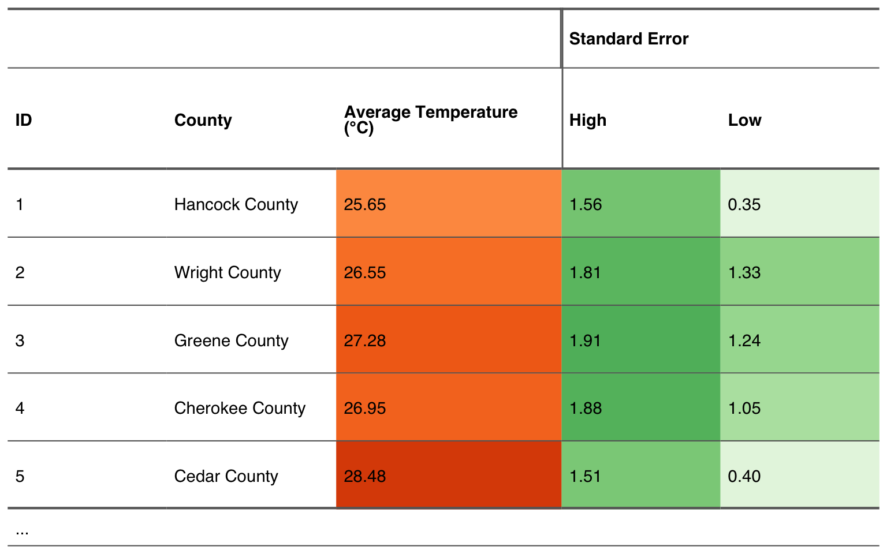
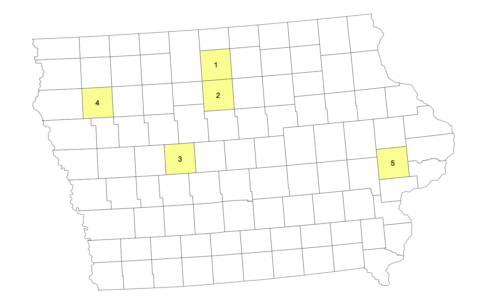
From entertainment choices to news articles to insurance plans, the modern citizen is so inundated with information in every aspect of their life it can be overwhelming. In the face of this overflow of information, tools that effectively reduce piles of information to simple and clear ideas become more valuable. That is, we need tools that can sort the signal from the noise.
Among these summary tools, information visualisations are one of the most powerful as they allow for quick and memorable communication that allow us to identify quirks in our data that we didn’t know to look for. Datasets such as Anscombe’s quartet (Anscombe 1973) or the Datasaurus Dozen (Locke and D’Agostino McGowan 2018) show a case where visual statistics highlight elements of the data that are invisible to the typical summary statistics. Something as simple as sketching a distribution before recalling statistics or making predictions can greatly increase the accuracy of those measures (Goldstein and Rothschild 2014; Hullman et al. 2018).
“Uncertainty visualisation” is a relatively new field in research. Early mentions of uncertainty visualisation start to appear in the late 1980s (Ibrekk and Morgan 1987), with geospatial information visualisation literature from the early 1990s declaring this to be essential aspect of any information display (Carr et al. 1992; MacEachren 1992). Figure 2.1 depicts an example of the uncertainty visualisations discussed in these early papers. Despite kicking off the field, these papers did not define uncertainty visualisation. This has led to a lack of consensus on what it means for a graphic to visualise uncertainty, an issue we will return to later. Therefore, while the field is considered to be quite new, many of the graphics used for uncertainty visualisation have been around for much longer. For example, box plots and histograms display variation which becomes synonymous with uncertainty when we are using them to depict the variation of an estimate. Today, there are an abundance of publications on the topic which makes it timely to construct a review of the field. That is, now that there is an overwhelming amount of information, it is valuable to distil it into simple facts. In fact, there have already been several reviews published but a central piece of discussion is missing.
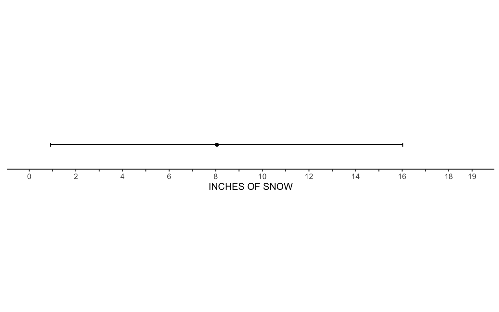
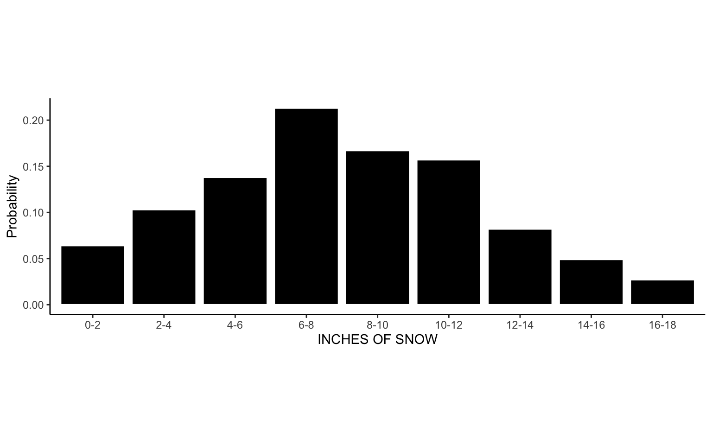
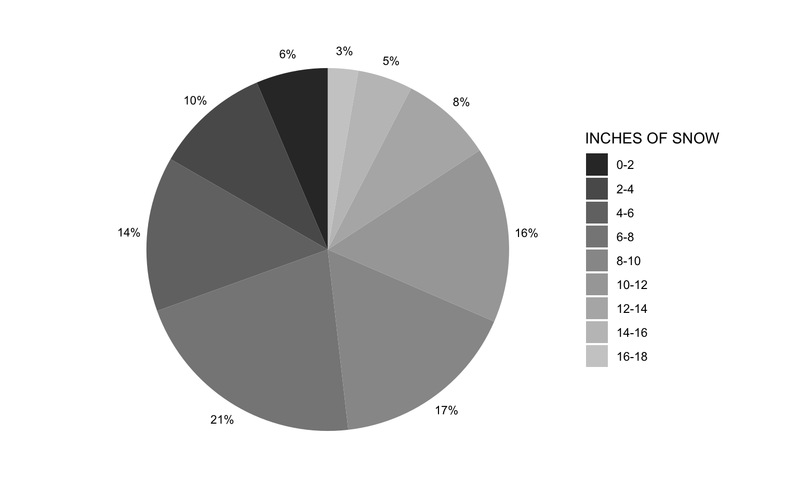
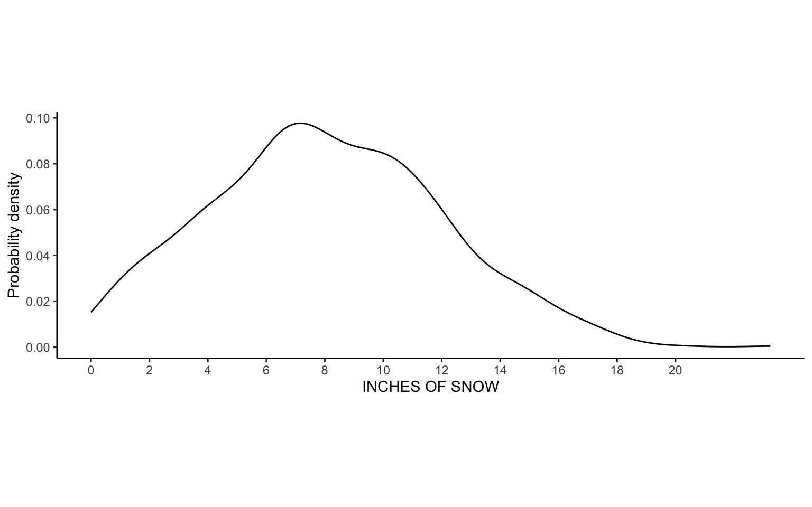
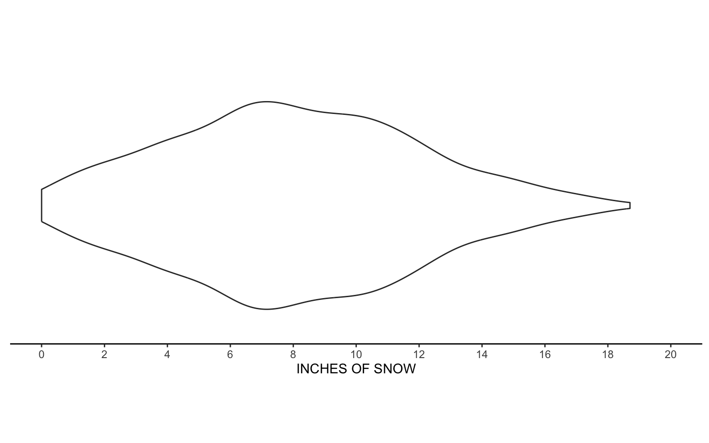
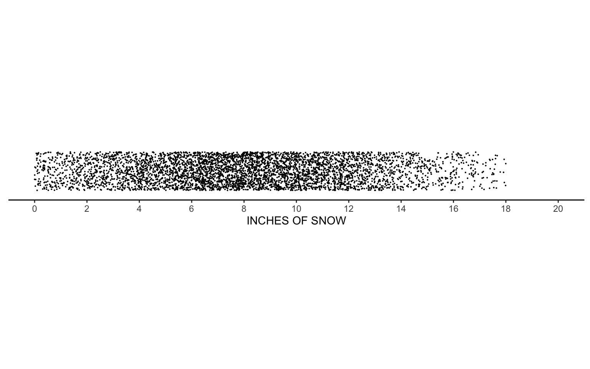
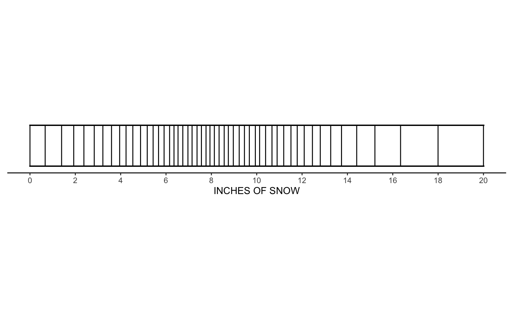
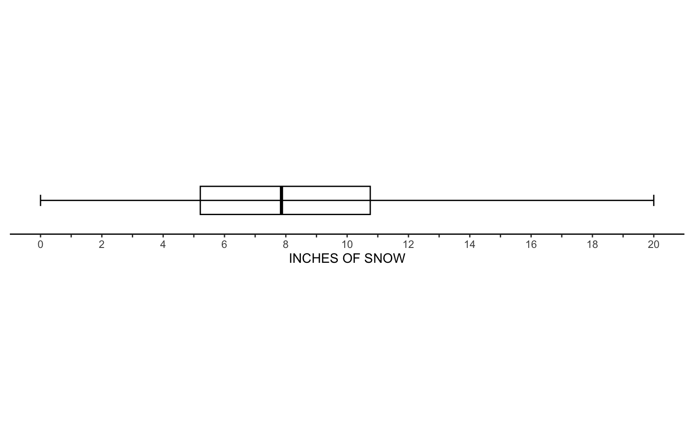
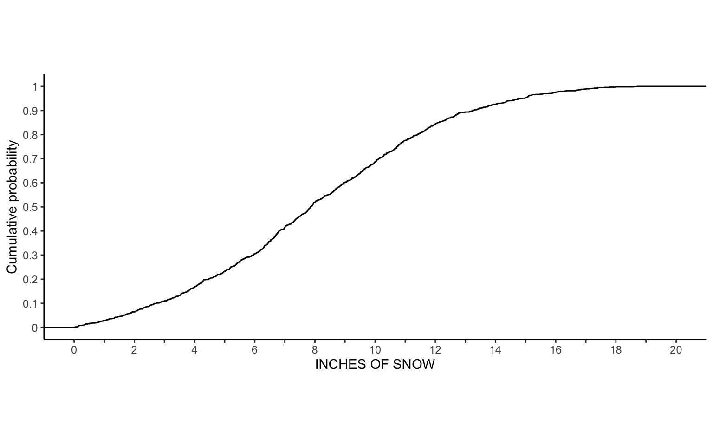
Reviews on uncertainty visualisation rarely offer tried and tested rules for effective uncertainty visualisation, but rather, they comment on the difficulties faced when trying to summarise the field. Kinkeldey et al. (2014) found most experimental methods to be ad hoc, with no commonly agreed upon methodology, formalisations, or greater goal of describing general principals. Hullman (2016) noticed there is a serious noise issue in the data coming from uncertainty visualisation experiments. She commented on the prevalence of confounding variables that make it unclear as to what exactly caused a subjects poor performance on a set of particular questions. Mistakes due to misunderstanding visualisations, misinterpreting questions, and incorrectly applying heuristics are all combined into a single error value. Spiegelhalter (2017) commented that different plots are good for different things, and disagreed with the goal of identifying a universal best plot for all people and circumstances. Griethe and Schumann (2006) did not identify common themes, but instead listed the findings and opinions of a collection of papers. Padilla et al. (2022) summarised several cognitive effects that repeatedly arise in uncertainty visualisation experiments, however these effects were each discussed in isolation as a list of considerations an author might make rather than an overarching theory of rules for effective uncertainty visualisation. While these reviews are thorough in scope, none discuss how the existing literature contribute to the broader goal of uncertainty visualisation. The problem faced by the literature is easily summarised with a famous quote by Henri Poincaré.
“Science is built up of facts, as a house is built of stones; but an accumulation of facts is no more a science than a heap of stones is a house.” - Henri Poincaré (1905)
That is to say, despite the wealth of reviews, the field of uncertainty visualisation remains a heap of stones. There is a mountain of work that identifies common heuristics found in uncertainty visualisations, evaluate competing plot designs, or start a theoretical discussion on a niche aspect of the field. This is important work that needs to be done, but each of these papers offers up their own bespoke motivation and methodology, with little reference to the uncertainty visualisation papers outside their periphery. This becomes even more difficult to manage when these studies are in conflict. The field is in desperate need of a unifying theory that can tie this swath of research together. This review attempts to address this issue by offering a novel perspective on the uncertainty visualisation problem. That is, we are going to use the wealth of established stone to construct the foundations on which we can build a house.
This review is broken into several parts that each reflect a different approach to uncertainty visualisation. First, we look at graphics that ignore uncertainty entirely and discuss why uncertainty should be included at all. Second, we look at methods that consider uncertainty to be just another variable and discuss the characteristics of uncertainty that make it a unique visualisation problem. Third, we look at methods that explicitly combine our estimate and its uncertainty and discuss the limitations of these approaches. Fourth, we discuss methods that implicitly include uncertainty by depicting a sample in place of an estimate. Finally, we discuss how uncertainty visualisations can be effectively evaluated. When discussing each of these methods, we will repeatedly return to the purpose of uncertainty visualisation and the effectiveness of each approach in fulfilling that purpose.
There are far too many uncertainty visualisations to exhaustively discuss them all. Instead we focus on the changes made to a single plot, the choropleth map. Due to the field’s origins and focus in geospatial information visualisation, there have been a large number of suggested variations on the choropleth map that allow authors to include uncertainty. Utilising a single example will help isolate the ideas we are trying to convey. Therefore, it is important to remember that even though we focus our discussion on the choropleth map, the theoretical approach we outline in this review is useful to all uncertainty visualisations regardless of their application. Additionally, our examples focus on incorporating uncertainty through colour manipulation, as that is the key visual channel used in a choropleth map. However, the methods we discuss go beyond variations in a colour palette. Even though they are not explicitly shown, visualisations that depict uncertainty using layers such as position or shape, and more complicated graphics that incorporate animation or interactivity are also within the scope of this review. We will use the choropleth maps as a tool to clearly highlight the costs and benefits of each approach.
Figure 2.2 shows the first six rows and the geographical boundaries of our data set. The temperature variable was generated using a sine wave, that is Temperature_i = 29-2\cdot{|Latitude_i - \sin{2 \cdot Longitude_i}|} where the Longitude and Latitude are the longitude and latitude of the county’s centroid scaled to a standard normal distribution. Each county’s variance is independently, randomly sampled from a uniform distribution. The low standard errors are drawn from a U_{[0,1]} distribution, while the high standard errors are drawn from a U_{[1,2]} distribution. As we are dealing with an average, the sampling distribution would be approximately normal by the central limit theorem, so each county temperature estimate is assumed to come from a N(Temp_i, SE_{case,i}). This is the data we will be using in our spatial uncertainty examples for the rest of the paper.


A good place to start might be at a deceptively straight forward question, why should we include uncertainty at all?
Figure 2.3 depicts a choropleth map of the counties of Iowa. Each of these counties are coloured according to an estimate of average daily temperature that was generated so that the values followed a clear spatial trend. The variance of these estimates were simulated such that the trend accounts for most of the variance in the plot in the low variance case (so we should expect the trend to be visible) while in the high variance, there is more variance within each county than between all the counties, so we should expect it to (at least in some capacity) overwhelm the spatial trend. Is this aspect of the data and the spatial data it communicates clear in in the map? Is the strength of the trend communicated through the visualisation?
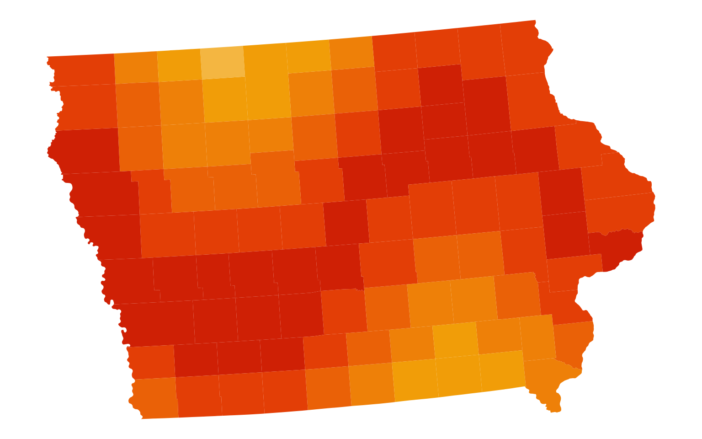

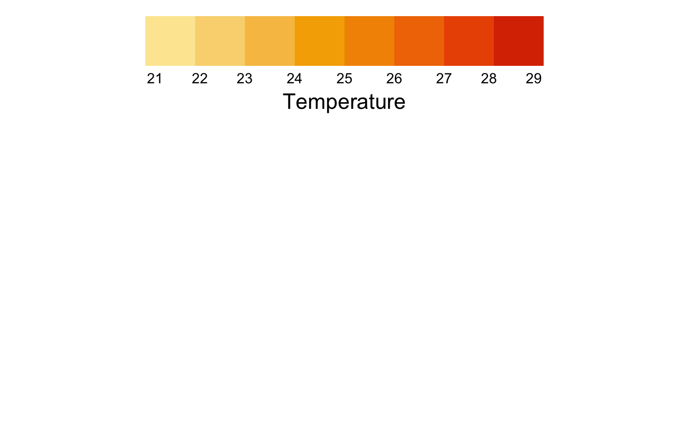
Uncertainty visualisation is required for transparency. The two choropleth maps that appear to be identical in Figure 2.3 highlight the issues with simply electing to ignore uncertainty. This sentiment appears frequently in the uncertainty visualisation literature. Some authors suggest uncertainty is important to include as it communicates the legitimacy (or illegitimacy) of the conclusion drawn from visual inference (Correll and Gleicher 2014; Griethe and Schumann 2006; Kale et al. 2018). Some authors have said that uncertainty should be included to degree of confidence or trust in the data (Boukhelifa et al. 2012; Zhao et al. 2023). Some authors directly connect uncertainty visualisation to hypothesis testing as it ensures the validity of a statement (Griethe and Schumann 2006; Hullman 2020), but allows for a proportional level of trust that is more detailed than the binary results of a hypothesis test (Correll et al. 2018; Correll and Gleicher 2014). Some authors even go so far as to claim that failing to include uncertainty is akin to fraud or lying (Hullman 2020; Manski 2020).
This consensus leads us to understand that uncertainty visualisation is motivated by the need for a sort of “visual hypothesis test”. A successful uncertainty visualisation would act as a “statistical hedge” for any inference we make using the graphic. Since the purpose of a visualisation is to give a quick gist of the information (Spiegelhalter 2017), this hedging needs to be communicated visually without the need for complicated calculations. If we refer to the conclusion we draw from a graphic to be its signal and the variance that makes this signal harder to identify as the “noise”, we can summarise the above information into three key requirements. A good uncertainty visualisation needs to:
As Figure 2.3 showed, visualisations that are unconcerned with uncertainty have no issue showing justified signals, but struggle with the display of unjustified signals. Therefore, we call this approach to uncertainty visualisation as “signal-suppression” since it primarily differentiates itself from from the normal “noiseless” visualisation approach through criteria (2). That is, the main difference between an uncertainty visualisation and a normal visualisation is that an uncertainty visualisation should prevent us from drawing unjustified conclusions.
Uncertainty visualisation is not only motivated by signal-suppression, and we would be remiss if we did not mention these alternative approaches. Some authors claim the purpose of uncertainty is to improve decision making (Boone et al. 2018; Cheong et al. 2016; Hullman 2016; Ibrekk and Morgan 1987; Padilla et al. 2017, 2022). Other authors do not describe uncertainty as important for decision making, but rather explicitly state it as a variable of importance in of itself (Blenkinsop et al. 2000). While uncertainty can provide useful information in decision making, it is important to recognise that the “uncertainty” in these cases is not acting as uncertainty at all. It is acting as signal.
This is obvious for the cases where we are explicitly interested in the variance or error, as we are literally trying to draw conclusions about an statistic that is used to describe uncertainty. The same is true for visualisations made for decision making, but it is less overt. This is easiest to understand with an example.
Imagine you are trying to decide if you want to bring an umbrella with you to work. An umbrella is annoying to bring with you, so you only want to pack it if the chance of rain is greater than 10%. Unfortunately, your weather prediction app only provides you with the predicted daily rainfall. Therefore, your decision will be improved with the inclusion of uncertainty. This is not because uncertainty in general is important for decision making, but because it gives you the tools required to calculate the actual statistic you are basing your decision on. In this sense, uncertainty is no more special to decision making than weight is special to a body mass index calculation.
This means the uncertainty visualisations that would perform the best in decision making would simply display the uncertainty statistic we are interested in, such as the variance, or probability of an event, using existing visualisation principles. This is precisely what we observe in the literature. Figure 2.4 depicts an exceedance probability map that was designed as an alternative to the choropleth map to improve decision making under uncertainty (Kuhnert et al. 2018; Lucchesi et al. 2021). A keen viewer may notice that the exceedance probability map is actually just a choropleth map, only the statistic being displayed has changed. We are not sure it is productive to categorise this visualisation as an uncertainty visualisation.
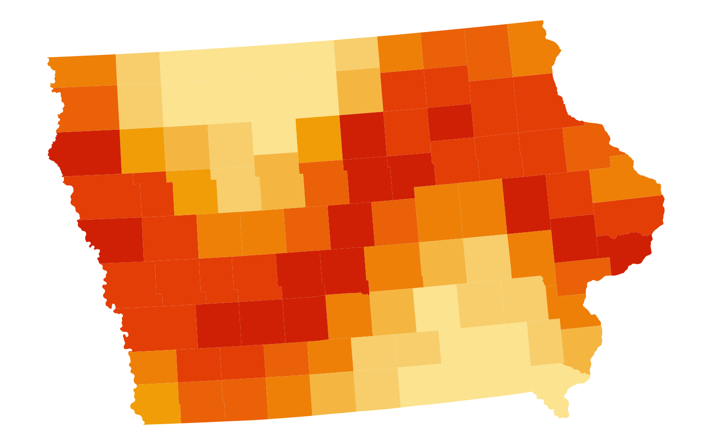
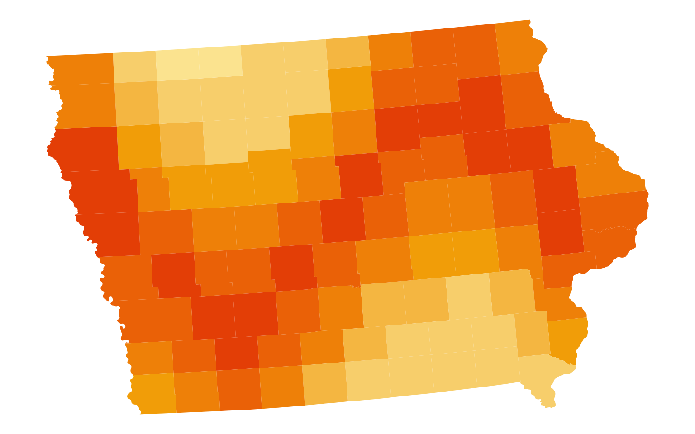
There seem to be two different definitions of uncertainty visualisation floating around in the literature. The first considers any visualisation of error, variance, or probability to be an uncertainty visualisation. The second believes an uncertainty visualisation is the output of a function that takes a normal visualisation as an input, and transforms it to include uncertainty information. The former group believe the purpose of uncertainty visualisation to provide signal about a distribution, while the later believe it should act as noise to obfuscate a signal. The lack of explicit distinction between these two motivations leaves the literature muddled and reviewers struggle to understand if uncertainty should be treated as a variable, as metadata, or as something else entirely (Kinkeldey et al. 2014). This disagreement creates constant contradictions in what the literature considers to be an uncertainty visualisation. For example Wilkinson (2005) mentions that popular graphics, such as pie charts and bar charts omit uncertainty, and Wickham and Hofmann (2011) suggests their product plot framework, which includes histograms and bar charts, should be extended to include uncertainty. However, pie charts, bar charts and histograms have all been used in a significant number of uncertainty visualisation experiments (Hofmann et al. 2012; Ibrekk and Morgan 1987; Olston and Mackinlay 2002; Zhao et al. 2023). If you view an uncertainty visualisation as a function applied to an existing graphic, then you would not see a pie chart or bar chart as uncertainty visualisations. These charts are they are yet to have the uncertainty visualisation function applied to them. If you view an uncertainty visualisation as any graphic that depicts a statistic then there are no limitations on which graphics can or cannot be uncertainty visualisations.
When we use the term uncertainty visualisation to refer to graphics that simply communicate a variance or probability, we are classifying visualisations by the data they display, not their visual features. Graphics, just like statistics, are not defined by their input data. A scatter plot that compares mean and a scatter plot that compares variances are both scatter plots. Given that there is no special class of visualisation for other statistics (such the median or maximum) there is no reason to assume visualisations that simply depict a variance, error, or probability to be special. Some authors implicitly suggest that visualisations of variance or probability are differentiated due to the psychological heuristics involved in interpreting uncertainty (Hullman et al. 2019). While it is true that heuristics lead people to avoid uncertainty (Spiegelhalter 2017), there is no evidence that this psychological effect translates to issues with the visual representation of uncertainty. Again, given that we do not make these same visual considerations for other variables that elicit distaste or irrational behaviour, there is no reason to assume this is what makes uncertainty visualisation so special.
This leads us to the conclusion that the visualisations made for the purpose of displaying information about uncertainty statistics are not uncertainty visualisations. These graphics are just normal information visualisations, and authors can follow existing principles of graphical design. We focus on the perspective that uncertainty visualisation serves to obfuscate signal, and an uncertainty visualisation is a variation on an existing graphic that gives it the ability to suppress false signals.
Of course, there is nothing wrong with explicitly visualising variance, error, bias, or any other statistic used to depict uncertainty as a signal. Just like any other statistic, these metrics provide important and useful information for analysis and decisions. However, there is no interesting visualisation challenge associated with these graphics, and they do not require any special visualisation techniques. The uncertainty in these graphics are acting as a signal variable, and they should be treated as such.
Upon hearing that uncertainty needs to be included for transparency, the solutions may seem obvious. You may think “well, I will just add a dimension to my plot that includes uncertainty”. This is a reasonable approach. The simplest way to add uncertainty to an existing graphic is to simply map uncertainty to an unused visual channel. However, it is unclear if this approach is sufficient for our purposes.
Figure 2.5 depicts a variation of the choropleth map, where we have a two dimensional colour palette. In this graphic, temperature is still mapped to hue, but the variance is included by utilising colour saturation. While these two maps do look visually different (which was not the case in the choropleth map) the spatial trend is still clearly visible in both graphics. This means the uncertainty is technically being communicated, however the main message of the graphic is still the spatial trend (that may not exist). The graphic did not suppress the invalid signal, so it is not performing signal-suppression as we would like. At this point, it might be reasonable to ask, why? Why is including the uncertainty as a variable insufficient to achieve signal-suppression, and what changes should we make to ensure signal-suppression occurs?
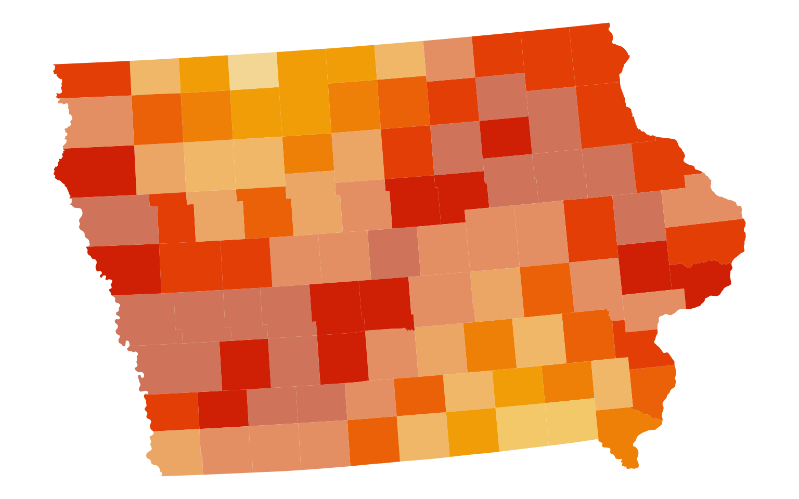
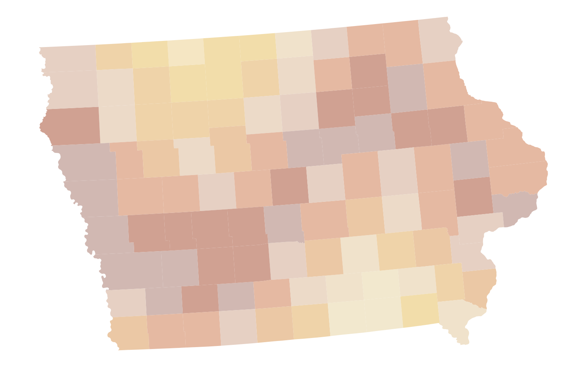
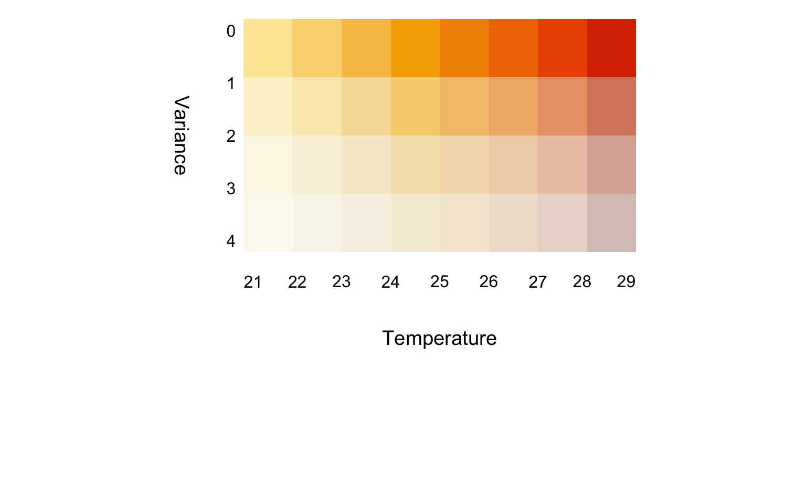
The difficulty in incorporating uncertainty into a visualisation is frequently mentioned but seldom explained. For example Hullman (2016) commented that it is straightforward to show a value but it is much more complex to show uncertainty but did not explain why. Many authors seem to believe uncertainty visualisation is a simple high-dimensional visualisation problem, as the difficulty comes from working out how to add uncertainty into already existing graphics (Griethe and Schumann 2006). While this is part of the problem in uncertainty visualisation, it is not the complete picture. Figure 2.5 makes it clear that simply including uncertainty as a variable is insufficient to perform signal-suppression. If we cannot treat uncertainty the same as we would any other variable, how should we treat it? We need to understand what uncertainty actually is, in order to understand how to integrate it into a visualisation.
Describing what uncertainty actually is, is surprisingly hard. Most authors simply avoid the problem and describe the characteristics of uncertainty, of which there are plenty. Often, uncertainty is split using an endless stream of ever changing boundaries, such as whether the uncertainty is due to true randomness or a lack of knowledge (Hullman 2016; Spiegelhalter 2017; Walker et al. 2003), if the uncertainty is in the attribute, spatial elements, or temporal element of the data (Kinkeldey et al. 2014), whether the uncertainty is scientific (e.g. error) or human (e.g. disagreement among parties) (Benjamin and Budescu 2018), if the uncertainty is random or systematic (Sanyal et al. 2009), statistical or bounded (Gschwandtner et al. 2016; Olston and Mackinlay 2002), recorded as accuracy or precision (Benjamin and Budescu 2018; Griethe and Schumann 2006), which stage of the data analysis pipeline the uncertainty comes from (Walker et al. 2003), how quantifiable the uncertainty is (Spiegelhalter 2017; Walker et al. 2003), etc. There are enough qualitative descriptors of uncertainty to fill a paper, but, none of this is particularly helpful in understanding how to integrate it into a visualisation. Rather than trying to define uncertainty by looking at the myriad ways in which it does appear in an analysis, we may find it easier to look at where it does not.
Descriptive statistics describe our sample as it is and summarises large data down into an easy to swallow format. Descriptive statistics are not seen as the primary goal of modern statistics, however, this was not always the case. In 19th century England, positivism was the popular philosophical approach to science (positivists included famous statisticians such as Francis Galton and Karl Pearson). Practitioners of the approach believed statistics ended with descriptive statistics as science must be based on actual experience and observations (Otsuka 2023). In order to make statements about population statistics, future values, or new observations we need to perform inference, which requires the assumption of the “uniformity of nature”, that is, we need to assume that unobserved phenomena should be similar to observed phenomena (Otsuka 2023). Positivists believed referencing the unobservable was bad science. In other words, these scientists embraced descriptive statistics due to the inherent certainty that came with them. Since uncertainty is non-existent in descriptive statistics, it is clear that uncertainty is a by-product of inference.
This history lesson illustrates what uncertainty actually is. At several stages in a statistical analysis, we will violate the uniformity of nature assumption. Each of these violations will impact the statistic we have calculated and push it further from the population parameter we wish to draw inference on. Uncertainty is the amalgamation of these impacts. If we do not violate the uniformity of nature assumption at any point in our analysis, we do not have any uncertainty.
This interpretation of uncertainty indicates that the uncertainty is not a variable of importance in of itself. Uncertainty is metadata about our statistic that is required for valid inference. This means uncertainty should not be visualised by itself and we should seek to display signal and uncertainty together as a “single integrated uncertain value” (Kinkeldey et al. 2014). This aspect of uncertainty visualisation makes it a uniquely difficult problem.
Typically, when making visualisations, we want the visual channels to be separable. That is, we don’t want the data represented through one visual channel to interfere with the others (Smart and Szafir 2019). Mapping uncertainty and signal to separable channels allows them to be read separately, which does not align with the goal of communicating them as a single integrated channel. Visualising uncertainty and signal separately allows the uncertainty information to simply be ignored, which is a pervasive issue in current uncertainty visualisation methods (Padilla et al. 2022). We can see this problem in Figure 2.5, as it sends the message “this data has a spatial trend and the estimates have a large variance” as we read the signal and the uncertainty separately.
This means effective uncertainty visualisation should be leveraging integrability. That is, the visual channels of the uncertainty and the signal would need to be separately manipulable, but read as a single channel by the human brain. While most visual aesthetics are separable, there are some variables that have been shown to be integrable, such as colour hue and brightness (Vanderplas et al. 2020). When visualising uncertainty using its own visual channel, we can also consider visual semiotics and make sure to map uncertainty to intuitive visual channels, such as mapping more uncertain values to lighter colours (Maceachren et al. 2012). Unfortunately relying on integrability may not give us the amount of control we want over our signal-suppression. Without a strong understanding of how these visual channels collapse down into a single channel, relying on integrability could create unintended consequences such as displaying phantom signals or hiding justified signals. Additionally, multi-dimensional colour palettes can make the graphics harder to read and hurt the accessibility of the plots (Vanderplas and Hofmann 2015).
There is another benefit to mapping uncertainty to saturation that is not directly related to integrability. As the saturation decreases colours become harder to distinguish. This means high uncertainty values are harder to differentiate than low uncertainty values. We can leverage this implicit feature of colour value by transforming the visual feature space ourselves.
Instead of hoping that uncertainty might collapse signal values into a single dimension, we can do some of that work ourselves. As a matter of fact, some uncertainty visualisation authors already have.
The Value Suppressing Uncertainty Palette (VSUP) (Correll et al. 2018), was designed with the intention of preventing high uncertainty values from being extracted from a map. Since the palette was designed with the extraction of individual values in mind and it has only been tested on simple value extraction tasks (Correll et al. 2018) or search tasks (Ndlovu et al. 2023), it is unclear how effective the method is at suppressing broader insights such as spatial trends.
Figure 2.6 is a visualisation of the Iowa temperature data using a VSUP to colour the counties. The low uncertainty case still has a visible spatial trend, while the spatial trend in the high uncertainty map has functionally disappeared. This means the VSUP has successfully suppressed the spatial trend in the data. However, the spatial trend may not be the only signal of concern in our graphic. Now we must return to the original signal-suppression criteria and ask ourselves if they have all been met. Are all the justified signals reinforced, while all the unjustified signals are suppressed? Is a graphic that performs perfect signal-suppression even possible?
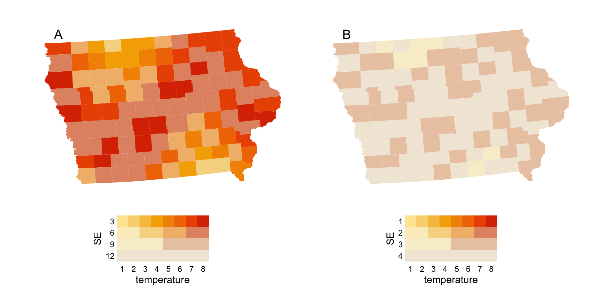
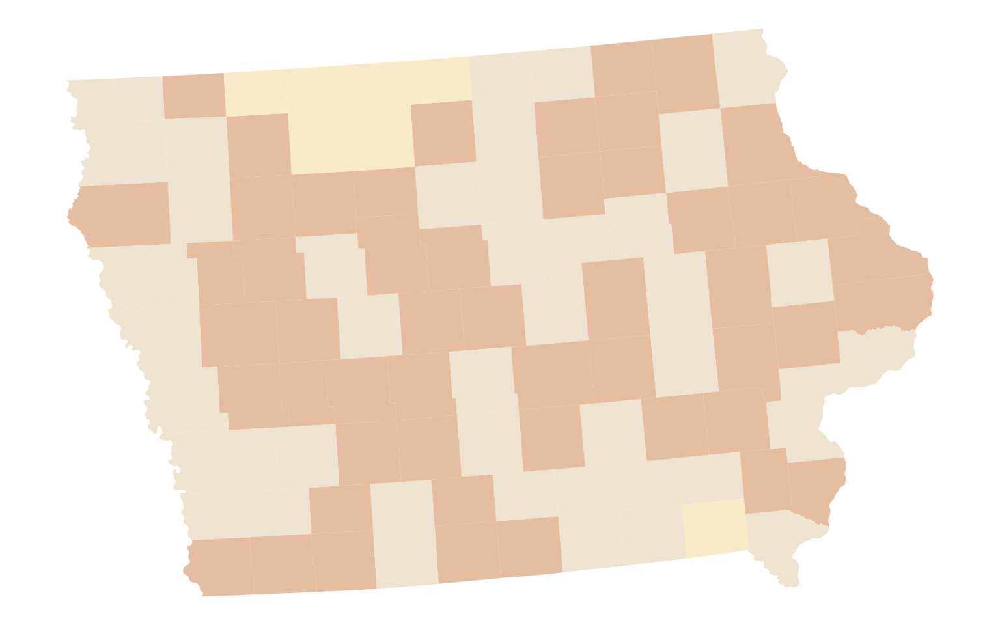
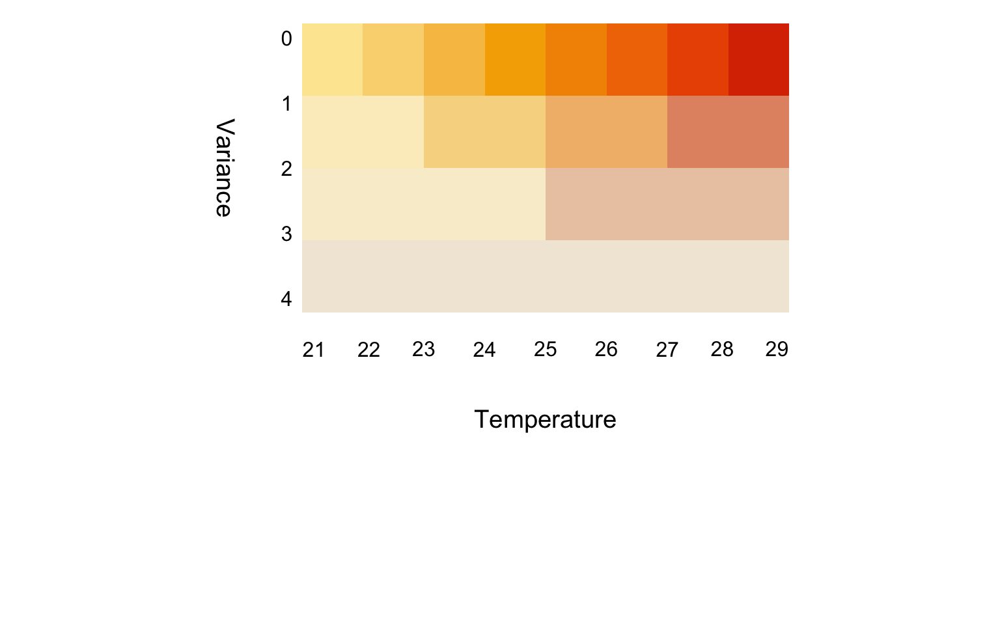
The methods used by the VSUP bring to light a slight problem with uncertainty visualisation. Specifically, uncertainty and the purpose of visualisation are somewhat at odds with one another. There are two primary motivations behind visualisation, communication and exploratory data analysis (EDA). Communication involves identifying a signal we want to communicate and designing a visualisation that best conveys that, while EDA involves creating a versatile visualisation and using it to extract several signals. If we are designing an uncertainty visualisation for communication then we can just suppress the specific signal we are seeking to communicate. In the map example, we would consider Figure 2.6 to be a success as the only signal we are concerned with is the spatial trend. However, it is not uncommon for authors to express a desire for uncertainty visualisations that perform signal-suppression in visualisations made for EDA (Griethe and Schumann 2006; Sarma et al. 2024). For uncertainty visualisation for EDA to work, we would need to assume that suppressing individual estimates using their variance should naturally extend to broader suppression of plot level insights. Unfortunately, it is unclear how reliably this would work.
Earlier we established that uncertainty is a by-product of inference, which means without inference, there is no uncertainty. Often EDA is used to give us an understanding of our data and identify which signals are worth pursuing. In this sense, EDA is the visual parallel to descriptive statistics, as it is performed without an explicit hypothesis, which means there is no inference, and by extension, there is no uncertainty.
Some authors recognise inference will always occur (in some shape or form) and believe uncertainty should be visualised but do not recognise how uncertainty would be visualised. Hullman and Gelman (2021) argued that there is no such thing as a “model-free” visualisation, therefore all visualisations require uncertainty as we are always performing inference. While it is true that we can think of visualisations as containing implicit inferential properties, there are many potential inferences in any single visualisation. This makes it a little difficult to ensure uncertainty is always included. For example, if we have a visualisation that shows an average, we would need to identify if the signal suppression should be performed using the sampling variance or the sample variance (Hofman et al. 2020). The distribution we use depends on the inferential statistic but until the viewer chooses one and thinks about it (which isn’t easily observable), the particular variety of uncertainty which would need to be displayed can’t be calculated. This means the ideal uncertainty visualisation should not only meet the signal suppression requirements, but should also endeavor to be versatile enough to meet those requirements for all the signals displayed in the graphic.
The lack of versatility of the VSUP is easy to see with a simple example.
Let’s say we have a graphic that depicts a set of coefficients from a linear regression and the value of the coefficient is shown using a single colour. We want to know “Which of these coefficients are different from 0?” as well as “Which of these coefficients are different from each other?”. To answer this question we do a series of t-tests on these estimates. All of the individual t-tests of fail to reject the null hypothesis that the coefficients are different from 0. We then make a visualisation that suppresses this signal and ensures that all of the estimates are visually indistinguishable from 0. Next, we conduct two sample t-test and find that several of the values need to be visually distinguishable from each other. The VSUP method must pick a single colour for each estimate, and these colours must be either visually distinguishable or indistinguishable from each other. We cannot perform signal-suppression on both these signals simultaneously.
This example highlights a fundamental problem with the VSUP that extends to the bivariate map as well. When we blend these colours, we need to decide at what level of uncertainty to blend these colours together. Even though the bivariate map does not explicitly combine colour values at certain variance levels, the mapping of variance to colour saturation does this implicitly. That is, at certain saturation values the colours in a bivariate map are imperceptibly different and appear as though they are mapped to the same value. At this point, it is irrelevant whether or not the colours are technically different, they are the same colour in the human brain. This is of course complicated by the fact that human colour perception varies at an individual level. Some women are believed to have four different cone cells which allows them to perceive a greater range of colours, while others only have one or two types of cone cells and have colour deficiencies (Simunovic 2010) For VSUP to function for all individuals, we must calibrate each plot to an individual’s ability to perceive colour.
If we only use a single colour to express each signal-suppressed statistic, we will always need to decide which signals we suppress and which we do not. This issue has already been raised in the literature. Which hypothesis are suppressed and which are not largely depends on the method used to combining colours in the palette (Kay 2019). The VSUP in Figure 2.6 used the tree based method that was used by Correll et al. (2018), but there are alternatives that are more appropriate for different hypothesis.
Uncertainty visualisation for EDA would be possible if we designed a plot in such a way that suppressing individual estimates using their variance would naturally extend to broader suppression of plot level insights. This assumption is commonly made by visualisation researchers in normal visualisation experiments (North 2006). If we could express the statistic of a cell using multiple colours, this limitation may disappear entirely.
Rather than trying to figure out how to combine signal and uncertainty into a single colour, we can just display a sample instead and allow the viewer to extract both the estimate and the variance.
Figure 2.7 displays a pixel map (Lucchesi et al. 2021), which is a variation of the choropleth map where each area is divided up into several smaller areas, each coloured using outcomes from the larger area’s (i.e. the county’s) average temperature sampling distribution. The spatial trend is clearly visible in the low variance case, but functionally disappears in the low variance case. While the spatial trend is just barely visible in the high uncertainty case, it is much harder to see. This means the graphic also achieves the third criteria for signal-suppression, i.e. our difficulty in seeing the distribution is proportional to the level of uncertainty in the graphic.
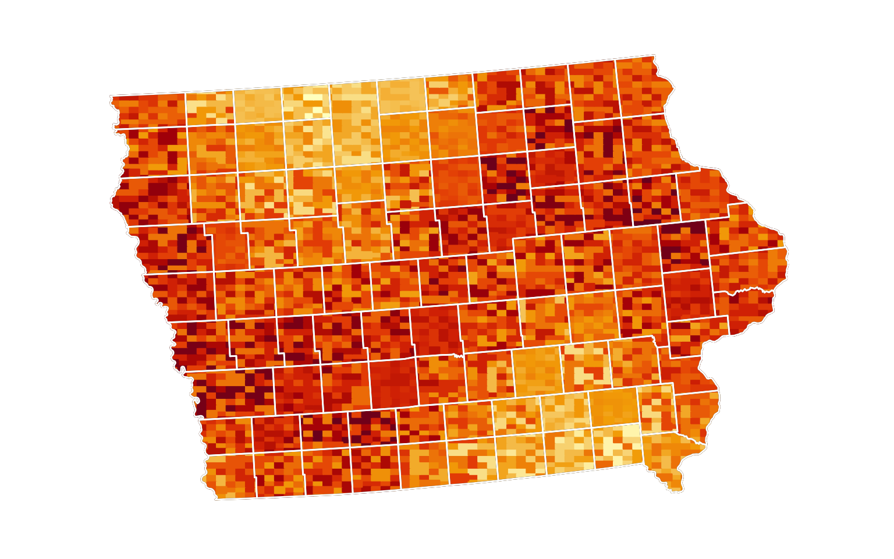
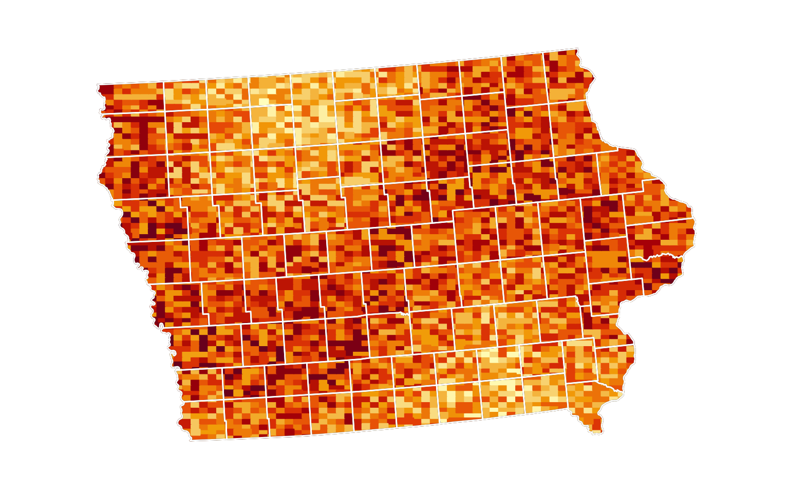
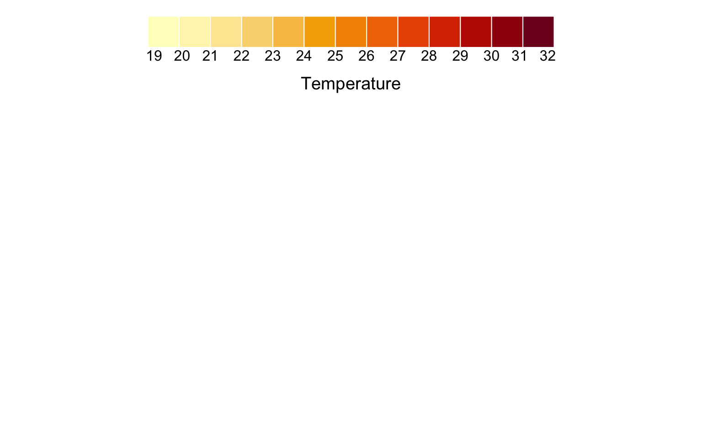
It is clear that the pixel-map is not only suppressing the false information, but it is doing so by simulating more information. The efficacy of this method means that visualisations of simulated samples pop up repeatedly in the literature, with examples including samples that are animated over time (Blenkinsop et al. 2000; Hullman et al. 2015), pixel-maps, and spaghetti time series plots. Not only does this method help readers understand the plot level gist, it is also unlikely to damage the viewers ability to extract individual estimates. Extracting global statistics, such as the mean or variance, from a sample can be done with relative ease, especially when those values are mapped to colour (Franconeri 2021). Additionally, Ndlovu et al. (2023) found that participants applied the same methods they used for simple choropleth maps to complicated uncertainty maps even if that take away was invalid. The pixel map can be read the same way as a choropleth map, which allows us to leverage that automatic response. Therefore, the pixel map performs signal suppression, without sacrificing the viewers ability to extract general statistics, unless those statistics should be harder to extract due to the uncertainty in the value. So, what is it about Figure 2.7 that allows it to be such a successful uncertainty visualisation? Is this a question we can easily answer?
To thoroughly understand why pixel maps seem to successfully perform signal suppression, we would need a more thorough discussion than what can be offered here. However, this does not prohibit us from discussing potential reasons for the graph’s effectiveness. There is a second type of uncertainty that the pixel map quietly communicates but we have not touched on yet, and this uncertainty is also conveyed by visualisations of our raw data. That is, these graphics can show assumption violations.
As we discussed in previous sections, we can consider uncertainty to be “the amalgamations of the impacts of violations to the assumption of the uniformity of nature”. It’s not a definition that rolls off the tongue, but we can work with it. Thankfully, this definition of uncertainty aligns nicely with all the concepts that are included in the uncertainty umbrella. Some works (Hullman et al. 2018; Maceachren et al. 2012; Thomson et al. 2005) focus narrowly on specific terms with mathematical definitions, such as probability, confidence intervals, variance, error, or precision. These works are only concerned with quantifying the final impact of uncertainty on our statistics. That is, how large should the bound around our statistic be, such that our “true” statistic can be inferred. Others (Boukhelifa et al. 2017; Griethe and Schumann 2006; Pang et al. 1997; Pham et al. 2009; Wilkinson 2005) include broader loosely related elements, such as missing values, reliability, model validity, or source integrity. These broader and harder to quantify concepts are concerned about potential sources of uncertainty, that is, they describe violations to the assumption of the uniformity of nature.
What this means is that we have two types of uncertainty, but one is more “processed” than the other. Quantifiable uncertainties are just assumption violations expressed as an effect on our final statistic (or true variation of our data). The disconnect between quantifiable and unquantifiable uncertainty creates a huge problem for authors trying to visualise it. A survey of visualisation authors cited “not knowing how to calculate uncertainty” as one of the primary reasons they did not include it in visualisations (Hullman 2020).
There are two reasons we might leave our uncertainty as an assumption violation rather quantifying the effect. The first reason is that we may be unable to translate the assumption violation to a quantifiable uncertainty. There is no blanket rule that allows us to reliably quantify all uncertainty for every statistic, although some researchers have tangled with the idea. For example, Thomson et al. (2005) suggests a mathematical formula for examples of uncertainty, and information theory tries to quantify uncertainty using the idea of entropy, but they ignore the disconnect between the broad concept of uncertainty and what we can reliably quantify. Some authors don’t believe that it is even possible to quantify all the assumption violations (Spiegelhalter 2017).
The second reason to leave uncertainty as a potential violation of our assumptions, is that we might not know the final statistic we are seeking to calculate. This is the case for visualisations made for EDA, and a large number of developments in EDA visualisation have been in displaying these difficult to quantify violations. For example, Tierney and Cook (2023) builds upon the tidy data principles to allow users to handle missing values. This includes data plots with a missing value “shadow” that allows visualisation authors to identify if the variables used in a plot have any structure in their missing values, which would contribute to uncertainty.
With this understanding it becomes clear to see why uncertainty is tied to an endless string of examples in the data analysis pipeline. Uncertainty examples include imputed data, model selection, inherent randomness, biased sampling, etc., not because these things are uncertainty, but because they create uncertainty when we perform inference. Whether or not these elements are relevant is highly dependent on what statistic you are trying to draw inference on, and by extension, the purpose of your visualisation.
This relationship between uncertainty and the purpose of our analysis is littered throughout the literature. Multiple authors have commented on the need to consider quantifying and expressing uncertainty at every stage of a project as the goal shapes every step of the analysis (Hullman 2016; Kinkeldey et al. 2014; Refsgaard et al. 2007). Otsuka (2023) suggested that the process of observing data to perform statistics is largely dependent on our goals, because the process of boiling real world entities down into probabilistic objects (or “probabilistic kind” as he puts it) depends on the relationship we seek to identify with our data. Meng (2014) commented what is kept as data and what is tossed away is determined by the motivation of an analysis and what was previously noise can be shown to become signal depending on the question we seek to answer.
Wallsten et al. (1997) argue that the best method for evaluating or combining subjective probabilities depends on the uncertainty the decision maker wants to represent and why it matters. Fischhoff and Davis (2014) looks at uncertainty visualisation for decision making decides that we should have different ways of communicating uncertainty based off what the user is supposed to do with it.
This makes it very difficult to move quantified uncertainty through the layers of our analysis, especially when designing a visualisation for EDA. If we don’t know what the final statistic is, we cannot quantify the effects of our assumptions. Therefore, it is often the case that the best uncertainty visualisation is not an uncertainty visualisation at all, but simply the most accurate depiction of our raw data. This does not mean that visualising raw data will always prevent insignificant signal from getting through. Roy Chowdhury et al. (2015) illustrated how groups that appear linearly separable in a linear discriminant analysis (LDA) visualisation of the data can actually be the result of a LDA performed on too many variables, something that was not clear from the visualisation until the line-up protocol was implemented. However, just showing the data is a simple but effective option for uncertainty visualisation that seems to be largely overlooked.
Of course, visualising the raw data is not always possible nor suitable. For example, if we have a specific statistic in mind, it may be more appropriate to show the sampling distribution of that statistic rather than the variability of all observations. If we visualise that sampling distribution in a way that allows us to see it’s shape, and therefore recognise any assumption violations (such as a non-normal distribution), we maintain some of the benefits that came with visualising the raw data. This is exactly what the pixel map does, and likely contributes to it’s success as a signal suppression method.
If we want to make conclusions about how effective any uncertainty visualisation method is we need to look at the results of evaluation experiments. Unfortunately the illustrative methods we have used thus far, i.e. showing a graphic and saying “wow look at this”, is lacking if we want any serious results. However, despite the abundance of uncertainty visualisation evaluation experiments, existing literature reviews have struggled to synthesise them into any common rules (Hullman 2016; Kinkeldey et al. 2014).
Here we discuss common evaluation methods, why these methods might struggle to create a cohesive set of recommendations for uncertainty visualisations, and consider how to evaluate visualisations on their ability to perform signal-suppression.
Including uncertainty in a visualisation comes with many secondary benefits. Examples of these benefits include better decisions, more trust in the results and the ability to extract additional statistics, such as the variance. Ultimately, these secondary benefits are not the primary goal of uncertainty visualisation, and evaluating uncertainty visualisations on these criteria often has unintended consequences.
Uncertainty visualisations are often evaluated based on how accurately (Hullman et al. 2019) viewers can separately extract the estimate and its variance (Kinkeldey et al. 2014). This means a significant chunk of evaluation studies boil down to showing a participant a visualisation and asking questions such as “what is the variance of X?”, or “what is the mean of X?”. This seems like a relatively straight forward approach, and it is similar to how non-uncertainty visualisations are evaluated, but is this appropriate for uncertainty visualisations? The role of uncertainty is rarely evaluated in these studies as the graphics are often compared on the basis of being uncertainty visualisations (Hofman et al. 2020; Hullman et al. 2015; Ibrekk and Morgan 1987), a class that has no established definition. By shifting the focus of our inference from \bar{X} to Var(X) or P(X) we end up evaluating visualisations on their ability to convey uncertainty statistics, rather than on uncertainty’s ability to suppress statistics. This leads to a series of experiments where the uncertainty is evaluated as a signal even if that was not the goal of the experiment.
The problem with evaluating uncertainty as a signal are identical to the problems associated with displaying uncertainty as a signal. There is no reason to assume uncertainty would behave any differently to any other variable when we evaluate them in this way. For example, Ibrekk and Morgan (1987) found that participants were more accurate at extracting a statistic when it could be directly read off the graphic, than when it required an area estimate (which is the case if using the probability density function), or when there was no visual indicator for the statistic at all (which is the case when using the cumulative distribution function of a skewed random variable). Hullman et al. (2015) found that a visualisation that allows viewers to count outcomes to estimate a probability outperformed one that required a complicated area calculation. Hofman et al. (2020) and Zhang et al. (2022) found that participants were better at answering questions about prediction intervals when shown a prediction interval instead of a sampling distribution. Gschwandtner et al. (2016) found that graphics where the required statistic could be directly read off the plot outperformed those that involved guesswork due to a gradually decreasing line. Cheong et al. (2016) found that participants made better decisions when they were explicitly given the relevant probability in text rather than when they needed to read it off a map. It is well established that extracting information from a graphic using a perceptual task will always be less accurate than explicitly reading the value provided in text form (Cleveland and McGill 1984).
The biggest failing of this evaluation method is not the predictable outcomes, but that it encourages us to see successful examples of signal-suppression as a failing. Blenkinsop et al. (2000) commented that visually integrable depictions of uncertainty should be avoided, as they decrease the viewers confidence in their extracted data values. This conclusion is antithetical to the goals of signal-suppression and occurs because these methods evaluate uncertainty as a signal, not as noise.
Trust is a by-product of displaying uncertainty so it is commonly measured in uncertainty evaluation studies (Hullman et al. 2019). Considering trust, and not transparency, as the metric of importance in uncertainty communication can lead to a questionable subtext that argues against transparency, something that has been noticed by several other authors (O’Neill 2018; Spiegelhalter 2017). Science communication should be primarily concerned with accuracy. This accuracy may not always involve showing the data exactly as it is, for example we may want to adjust our graphic to correct for visual heuristics, but these changes should still be in pursuit of accuracy. Setting trust as the variable of interest implicitly encourages statisticians to set trust as the primary goal of communication. Evaluating visualisations on trust conflates trust and transparency and ultimately discourages signal-suppression. We can see this effect pop up in the results of evaluation studies. For example, Zhao et al. (2023) found that participants were more trusting of model estimates with low uncertainty, but this effect did not carry over to estimates with high uncertainty. Despite decreased trust being a desired outcome of signal suppression, the author’s discussion implied this result was not desired. This perspective ends up extending to visualisation authors as well. Hullman (2020) found that authors simultaneously argued that failing to visualise uncertainty was akin to fraud, but also many avoided uncertainty visualisation because they didn’t want their work to come across as untrustworthy. This is a classic example of the negative impacts of placing direct importance on trust rather than transparency. In cases of high uncertainty, authors will opt to leave out uncertainty information because it decreases confidence in the authors conclusions. This is the end result of designing uncertainty visualisations for increased trust, rather than signal-suppression. Of course, this does not mean measuring trust or perceived trustworthiness has no place in visualisation experiments. After all, if participants political motivations can influence their ability to accurately read a plot (Nurse and Grant 2020), then their level of trust in the information could have a similar effect. However, it does mean trust should not be the primary goal of uncertainty visualisation evaluation experiments.
Another metric that is similar to trust is the participants confidence in their decision or extracted value. Confidence has many of the same issues as trust, but it has an additional confounding factor. In non-uncertainty visualisation evaluation experiments, confidence is used as a proxy for the clarity of the visualisation. Confidence cannot simultaneously be a measure of clarity of visualisation and a way to capture the uncertainty expressed in a visualisation. Uncertainty visualisations conflate these two measures.
Risk-aversion is another secondary effect of uncertainty visualisation that is used to evaluate uncertainty visualisations (Hullman et al. 2019). Risk aversion is an economics term used to describe an agent who would chose a random variable with a lower expected payout because it also has a lower variance. Risk aversion is considered irrational behaviour because it is a deviation from the behaviour of a rational agent. Comparing participant responses to that of a rational agent has even been suggested as a benchmark for uncertainty visualisation experiments (Wu et al. 2023). However, just like trust, evaluating graphics on risk-aversion discourages signal-suppression. Rational agents by definition should ignore uncertainty information. Risk aversion is considered to be irrational because it means the economic agent is considering the uncertainty information. The only case where a rational agent should not ignore the uncertainty information is when the uncertainty is signal, not noise. Designing graphics that encourage choices that align with that of a rational agent, is to encourage graphics that do not include uncertainty at all.
For these reasons we do not believe trust, confidence, or risk-aversion are useful measures to evaluate uncertainty visualisations. While they are designed to capture the secondary effects of uncertainty, using them as primary measures of visualisation performance is in direct conflict with designing visualisations for signal-suppression.
There is a collection of studies that seem to be aware of the issues behind using trust or value extraction to evaluate uncertainty visualisations. These studies try to measure the effect of some kind of single integrated value, but the methodology is often ad-hoc with varying levels of success.
The first method is what we call the “vague question” approach. The authors of these studies will ask the participants a question that implies that they should use the uncertainty information, but it is unclear how. The authors then go on to compare the readers answer to a very specific ground truth. This means the participants are being evaluated as though they are performing a value extraction task, but they are not being asked the questions that are asked in the value extraction task. Ultimately this approach results in strangely cryptic questions that create a large amount of noise due to the varied interpretation of the questions (Hullman 2016).
For example Hofmann et al. (2012) showed study participants 20 plots, where each plot displayed two distributions (as a pair of jittered samples, density plots, histograms, or box plots) and asked them to identify the plot where “the blue group is furthest to the right”. The mean of the two groups was used to decide which group was actually “furthest to the right” and the different graphical approaches were evaluated against that ground truth. In another example Ibrekk and Morgan (1987) asked participants for the “best estimate”, but the participant’s responses were evaluated against the mean of the distribution. Ultimately, the term “best” is up to the users interpretation, and the estimate that minimised the sum of squared errors was not implied by the question. This vague question approach leads to inconclusive results, as we are left unclear if it was the phrasing of the question or the plot design that caused the participants to answer incorrectly.
A variation of the vague question problem, is a series of studies that ask questions that are impossible to answer using the information given to the participants. These studies frequently expect participants to give deterministic answers for probabilistic questions. For example Correll and Gleicher (2014) showed participants the distribution of voter preferences for two candidates in an election, and asked them “how likely is candidate B to win the election?”. Participants were not able to answer the question about likelihood in term of probability, but were instead given seven options from 1 = “Outcome will be most in favour of A” to 7 = “Outcome will be most in favour of B”. The ground truth statistic for this question was a scalar multiple of Cohen’s d, indicating participants were supposed to incorporate uncertainty information using a very specific formula that was likely unknown to them but assumed to be used implicitly.
In another example, Padilla et al. (2017) provided participants with a visualisation of the cone of uncertainty and asked then to “decide which oil rig will receive more damage based on the depicted forecast of the hurricane path”. The cone of uncertainty provides a 60% confidence interval for the location of the eye of a hurricane, which allows us to know the area where the eye of the storm will go, but it does not given any information about the intensity of a storm, the size of a storm, or even if a location will be hit. Other authors have commented on the complexity of communicating hurricane risk because the path, storm surge and wind speed are all important and cannot be ignored (Spiegelhalter 2017). Padilla et al. (2017) seem to be aware of the issues in the visualisation and are using the user study to show that current government communications are not the best choice when communicating hurricane risk, as it is unreasonable to assume that “more likely to be hit” should automatically translate to “more damage”. While this is useful to highlight, the authors end up caught by their own trap, as answering the questions in their second study correctly required participants to assume an area being more likely to be hit does translate to receiving more damage. The assumptions required to answer these deterministic questions are often invisible, even to the authors of the paper, which means they often create more problems than they solve when they are used as a tool for graphical evaluation. Similar to the vague question problem, these studies seem to be aware that we should be evaluating an uncertainty visualisation based on a deterministic observation (such as our example of “does this map have a spatial trend”) but are unsure how to incorporate or evaluate it.
While these approaches are certainly a step in the right direction, the experiments end up having far too much noise in their results. This is further complicated by the fact that visual statistics and their computational equivalents often differ, even before we consider these measurement errors. By having a ground truth, these experiments implicitly ask users to treat uncertainty as a signal which goes against the purposes of signal-suppression.
If we cannot ask direct questions about uncertainty, or measure the secondary effects of uncertainty, or ask indirect questions about the uncertainty; then how are we supposed to evaluate uncertainty visualisations? How do you measure something that disappears the second you look directly at it? To evaluate uncertainty visualisations, we need an experimental design that evaluates uncertainty as noise, not as signal. This means we need to measure uncertainty’s impact on the signal, not the uncertainty itself.
The most obvious way to evaluate uncertainty visualisations is to compare the visualisations to statistical tests. If a graphic was performing signal-suppression we would expect the signal to be harder to see at higher levels of uncertainty. The ideal outcome is a an uncertainty visualisation where the signal is only perceivable when it would be identified by a hypothesis test. Evaluating visualisations as though they are akin to hypothesis tests is a well established concept in visualisation. The lineup protocol is a good example of this approach. Lineups are a confirmatory visualisation tool that can be used to check if perceived patterns are real or merely the result of chance (Buja et al. 2009; Wickham et al. 2010). Lineups can also be used to evaluate the effectiveness of different types of plots (Hofmann et al. 2012) and design decisions (VanderPlas and Hofmann 2017). The motivation behind the lineup protocol is similar to the motivations behind signal-suppression, although the lineup protocol is more explicitly tied to a specific hypothesis. Li et al. (2024) compared standard statistical tests to the lineup-protocol, and evaluated the visualisations using the power curves that are typical for hypothesis testing. In a similar vein, Kim et al. (2019) investigated how different uncertainty visualisation methods influenced user’s prior beliefs, and evaluated the graphics by comparing their results to those from Bayesian inference. This approach is similar to the lineup protocol as it also evaluates a visualisation by comparing it to an analogous statistical calculation, however it does so using a different statistical philosophy. The connection with visualisation and statistical tests even extends to EDA, where Hullman and Gelman (2021) commented that a visualisation can be considered a model check where the null hypothesis is the expected and we are looking for the unexpected. This is all to say that comparing visualisations to hypothesis tests is not uncharted territory.
We could use a similar evaluation method to evaluate uncertainty visualisations, however, it is not entirely clear what the computational equivalent of an uncertainty visualisation is. Even the lineup protocol, which is much closer to a standard statistical test, runs into some difficulty when trying to directly compare it to its computational equivalent. Li et al. (2024) found that human viewers using the lineup protocol are less sensitive to deviations from the null hypothesis than standard statistical tests. However, this finding does not directly translate to the lineup protocol being worse than its computational equivalent. The lineup protocol allows viewers to detect if “something” is not right even if that something is unspecified, or what the authors intended. For example, VanderPlas and Hofmann (2017) did an experiment where participants were drawn to plots with unequal cluster sizes, even though the size of the cluster was not one of the features the authors were testing. While standard hypothesis tests may outperform the lineup protocol on power, computational tests have the benefit of knowing exactly what they are looking for. Visualisations are often explicitly made when we don’t know what we are looking for. Additionally, lineup protocols often have a specific hypothesis that is used to create the null distribution, while uncertainty visualisations are intended to be more flexible and can be created without identifying a specific null distribution. Therefore, while we could evaluate uncertainty visualisations by comparing them to a selection of hypothesis tests, we should not expect the same level of sensitivity that we get in standard hypothesis tests as the assumed knowledge about our data is quite different. This approach could give us a good idea of the use cases of different uncertainty visualisation designs, but we should be mindful of it’s limitations in fully describing the effectiveness of these graphics.
Alternatively visualisation research could shift away from the accuracy concept all together and ask questions that allow for open ended responses. This method can enlighten authors as to how the uncertainty information was used by the participants. Hofmann et al. (2012) captured this by asking participants why they considered a particular plot to be more right-shifted, even though this qualitative analysis did not make it into the final paper. Daradkeh (2015) presented participants with ten investment alternatives and asked participants “from among available alternatives, which alternative do you prefer the most”, and were asked to think aloud and consider the uncertainty in their decision making. The experimenters goal was to observe and organise the methods people use when making decisions in the face of uncertainty. They highlighted the specific aspects of uncertainty that participants typically considered, such as the range of outcomes that are above/below a certain threshold, minimum and maximum values, the risk of a loss, etc., and identified where in the decision making process participants made these considerations.
While experiments that explicitly identify heuristics in current methods are not technically measuring signal-suppression, they are still a useful consideration to keep in mind when designing experiments for signal suppression. Heuristic checks look at unknown pitfalls that might exist in interpretation of current plots (Hullman 2016) and can change depending on the larger scope of the graphic and the population we are communicating with (Kinkeldey et al. 2014; Spiegelhalter 2017).
Several heuristics are of particular importance for uncertainty visualisations, and are likely to impact how well different methods performing signal suppression. The sine illusion can cause the confidence interval of a smoothed sine curve to seem wider at the peaks than the troughs, causing us to underestimate uncertainty associated with changing values (Vanderplas and Hofmann 2015). Points that were on an outcome of an ensemble display were perceived as more likely than points not on an outcome, even when the point that was not on an outcome was closer to the centre of the distribution (and therefore more likely) (Padilla et al. 2017). This can be considered an extension of the within bar bias, where participants looking at a bar chat with error bars view outcomes within the bar as more likely than those outside it (Newman and Scholl 2012). Several studies have found that viewers use a heuristic where they compare the distance between two estimates to estimate if they are different, and in doing so, ignore the uncertainty information (Padilla et al. 2022).
These heuristics have the potential to create noise in signal suppression evaluations, and should be kept in mind when designing an evaluation experiment.
This paper has identified gaps in the uncertainty visualisation literature that must be filled for the field to progress. We formalised the uncertainty visualisation problem, and in doing so highlighted an untouched area of uncertainty visualisation research.
Experimental practices on uncertainty visualisation need to be standardised. Uncertainty visualisations for decision making treat uncertainty as signal, while visualisations for signal-suppression treat uncertainty as noise. As the literature currently exists, there is no way to combine papers to get a meaningful sense of how uncertainty information is understood by a viewer. Researchers need to ensure that when they identify the motivation behind their visualisation technique, and that their evaluation methods match the motivations of the paper. Additionally evaluation methods that evaluate uncertainty as noise need to be developed.
Experimenters should consider evaluating visual aesthetics on how well they suppress information in a graphic. Research into separability and integrability is of particular interest to uncertainty visualisation, as it allows interference from the uncertainty variable. When designing experiments, authors often choose aesthetics that are visually distinguishable; uncertainty visualisation authors should consider doing the opposite.
Software that allows users to easily perform signal suppression should be developed. Existing uncertainty visualisation methods view a distribution as its own object and there are no software options for the “an uncertainty visualisation is a function of an existing visualisation” philosophy.
Signal suppression is an untouched area of visualisation research and developing methods for the practice may require us to challenge our entire notion of what makes a good visualisation. We are interested to see how this challenge plays out.